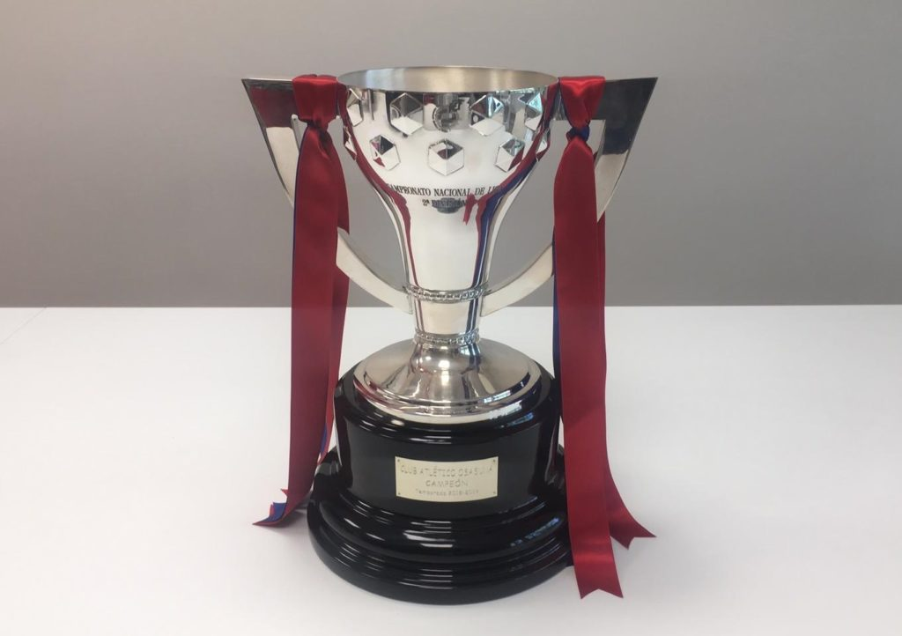

LA LIGA SMARTBANK

La Segunda División de España se inicio en 1929, hoy en dia se llama LaLiga SmartBank por pratocinio.
RANKING DE MAXIMOS GANADORES
| EQUIPO | LIGAS |
|---|---|
| Real Murcia | 8 |
| Betis | 7 |
| Deportivo la Coruña | 5 |
| Sporting Gijon | 5 |
| Real Oviedo | 5 |
| Osasuna | 4 |
| Sevilla | 4 |
| Las Palmas | 4 |
| Alaves | 4 |
| Celta de Vigo | 3 |
| Hercules | 3 |
| Malaga | 3 |
| Valladolid | 3 |
| Granada | 3 |
| Real Sociedad | 3 |
| Racing | 2 |
| C. E. Sabadell F. C. | 2 |
| Elche | 2 |
| Levante | 2 |
| Mallorca | 2 |
| Castellon | 2 |
| Espanyol | 2 |
| Alcoyano | 2 |
| Real Jean | 2 |
| Pontevedra | 2 |
| Valencia | 2 |
| Mérida | 2 |
| Real Zaragoza | 1 |
| Cadiz | 1 |
| Rayo Vallecano | 1 |
| Atlético Madrid | 1 |
| Atlético de Tetuán | 1 |
| Córdoba | 1 |
| Tenerife | 1 |
| Burgos | 1 |
| Lleida | 1 |
| Málaga | 1 |
| Recreativo de Huelva | 1 |
| Huesca | 1 |
| Almería | 1 |
| Cultural y Deportiva Leonesa | 1 |
| Almería | 1 |
| Real Madrid Castilla C. F. | 1 |
| Real Burgos C. F. | 1 |
| Albacete | 1 |
| Numancia | 1 |
| Xerez | 1 |
| Eibar | 1 |
TODOS LOS GANADORES
| AÑO | EQUIPO |
|---|---|
| 2021/22 | Almería (1) |
| 2020/21 | Espanyol (2) |
| 2019/20 | Huesca (1) |
| 2018/19 | Osasuna (4) |
| 2017/18 | Rayo Vallecano (1) |
| 2016/17 | Levante (2) |
| 2015/16 | Alaves (4) |
| 2014/15 | Betis (7) |
| 2013/14 | Eibar (1) |
| 2012/13 | Elche (2) |
| 2011/12 | Deportivo la Coruña (5) |
| 2010/11 | Betis (6) |
| 2009/10 | Real Sociedad (3) |
| 2008/09 | Xeres (1) |
| 2007/08 | Numancia (1) |
| 2006/07 | Valladolid (3) |
| 2005/06 | Recreativo de Huelva (1) |
| 2004/05 | Cadiz (1) |
| 2003/04 | Levante (1) |
| 2002/03 | Real Murcia (8) |
| 2001/02 | Atlético Madrid (1) |
| 2000/01 | Sevilla (4) |
| 1999/00 | Las Palmas (4) |
| 1998/99 | Málaga (1) |
| 1997/98 | Alaves (3) |
| 1996/97 | Mérida (2) |
| 1995/96 | Hercules (3) |
| 1994/95 | Mérida (1) |
| 1993/94 | Espanyol (1) |
| 1992/93 | Lleida (1) |
| 1991/92 | Celta de Vigo (3) |
| 1990/91 | Albacete (1) |
| 1989/90 | Real Burgos C. F. (1) |
| 1988/89 | Castellon (2) |
| 1987/88 | Malaga (3) |
| 1986/87 | Valencia (2) |
| 1985/86 | Real Murcia (7) |
| 1984/85 | Las Palmas (3) |
| 1983/84 | Real Madrid Castilla C. F. (1) |
| 1982/83 | Real Murcia (6) |
| 1981/82 | Celta de Vigo (2) |
| 1980/81 | Castellon (1) |
| 1979/80 | Real Murcia (5) |
| 1978/79 | Almería (1) |
| 1977/78 | Real Zaragoza (1) |
| 1976/77 | Sporting Gijon (5) |
| 1975/76 | Burgos (1) |
| 1974/75 | Real Oviedo (5) |
| 1973/74 | Betis (5) |
| 1972/73 | Real Murcia (4) |
| 1971/72 | Real Oviedo (4) |
| 1970/71 | Betis (4) |
| 1969/70 | Sporting Gijon (4) |
| 1968/69 | Sevilla (3) |
| 1967/68 | Deportivo la Coruña (4) y Granada (3) |
| 1966/67 | Malaga (2) y Real Sociedad (2) |
| 1965/66 | Deportivo la Coruña (3) y Hercules (2) |
| 1964/65 | Mallorca (2) y Pontevedra (2) |
| 1963/64 | Deportivo la Coruña (2) y Las Palmas (2) |
| 1962/63 | Real Murcia (3) y Pontevedra (1) |
| 1961/62 | Deportivo la Coruña (1) y Córdoba |
| 1960/61 | Osasuna (3) y Tenerife (1) |
| 1959/60 | Racing (2) y Mallorca (1) |
| 1958/59 | Valladolid (2) y Elche (2) |
| 1957/58 | Betis (3) y Real Oviedo (3) |
| 1956/57 | Sporting Gijon (3) y Granada (2) |
| 1955/56 | Osasuna (2) y Real Jean (2) |
| 1954/55 | Real Murcia (2) y Cultural y Deportiva Leonesa (1) |
| 1953/54 | Las Palmas (1) y Alaves (2) |
| 1952/53 | Osasuna (1) y Real Jean (1) |
| 1951/52 | Malaga (1) y Real Oviedo (2) |
| 1950/51 | Sporting Gijon (2) y Atlético de Tetuán (1) |
| 1949/50 | Racing (1) |
| 1948/49 | Real Sociedad (1) |
| 1947/48 | Valladolid (1) |
| 1946/47 | Alcoyano (2) |
| 1945/46 | C. E. Sabadell F. C. (2) |
| 1944/45 | Alcoyano (1) |
| 1943/44 | Sporting Gijon (1) |
| 1942/43 | C. E. Sabadell F. C. (1) |
| 1941/42 | Betis (2) |
| 1940/41 | Granada (1) |
| 1939/40 | Real Murcia (1) |
| 1935/36 | Celta de Vigo (1) |
| 1934/35 | Hercules (1) |
| 1933/34 | Sevilla (2) |
| 1932/33 | Real Oviedo (1) |
| 1931/32 | Betis (1) |
| 1930/31 | Valencia (1) |
| 1929/30 | Alaves (1) |
| 1928/29 | Sevilla (1) |